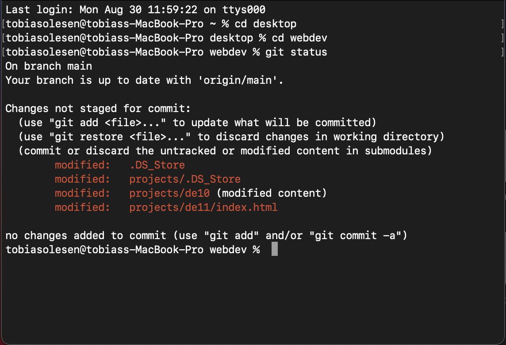
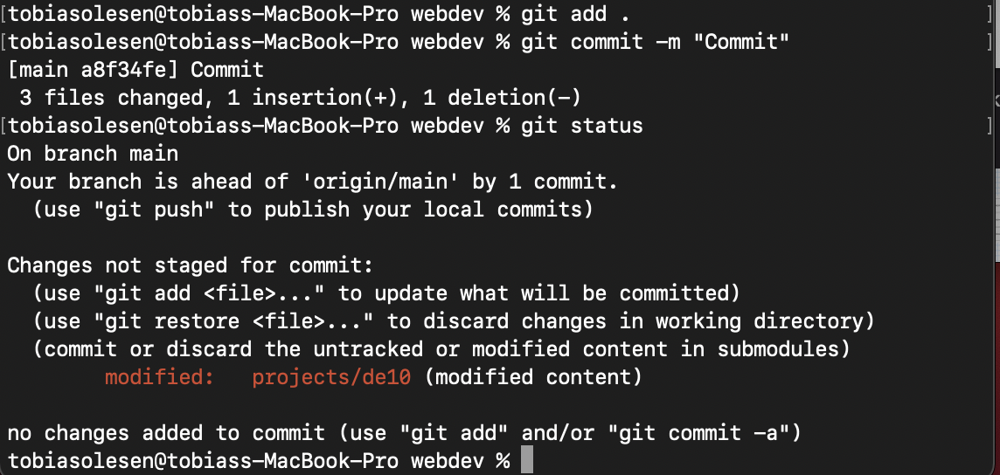

Assignment DE.1.1
Make an HTML5 page with a menu containing at least 3 items. One leading to another HTML5 page with some personal info you want to share. Another leading to a page with a CV of exams qualifying you for where you are now, and a third with a description of your leisure activities, such as sky diving, marathoning, mountain climbing or whatever you do.
Make a git repo in that directory. Stage the files. Make a screen dump of the output of the git status command.
Commit your work. Make another screen dump of the output of the git status command. Stage the two screen dumps, recommit, and submit the url of the repo.
Screen dump 1
Screen dump 2
